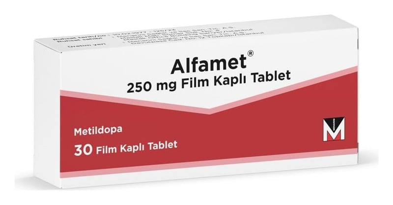

Alfamet 250 mg Film Kaplı Tablet, 30 Adet

Ne için kullanılır
KT · Bölüm 1ALFAMET sarı, yuvarlak, kokusuz, bikonveks film tablet şeklinde bir üründür. Metildopa isimli etkin maddeyi içermektedir. Bu madde tansiyonu (kan basıncını) düşürmeye yarayan antihipertansifler denilen bir ilaç grubuna aittir.
ALFAET yüksek tansiyon (hipertansiyon tedavisinde kullanılmaktadır. Metildopa vücudunuzun içinde kan basıncını düşüren doğal bir maddeye dönüştürülür.